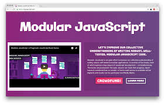
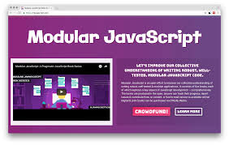

O que é?
Para que serve?
Aonde devo usá-lo?
O que é?
Para que serve?
Aonde devo usá-lo?
Clean Code em JavaScript é essencial para garantir a legibilidade e a manutenibilidade do código, especialmente em projetos colaborativos. A linguagem, com sua flexibilidade e popularidade, pode levar a práticas de codificação inconsistentes. Para escrever código limpo em JavaScript, é fundamental seguir princípios como a nomeação clara de variáveis e funções, evitando abreviações confusas. Além disso, manter funções curtas e focadas em uma única responsabilidade ajuda a tornar o código mais compreensível. O uso de comentários deve ser criterioso, servindo para esclarecer o que o código faz, e não para justificar implementações complexas.

Outro aspecto importante do Clean Code em JavaScript é a estruturação do código, utilizando módulos e componentes,especialmente ao trabalhar com frameworks como React ou Angular. Essa abordagem não só organiza melhor oprojeto, mas também facilita a reutilização de código e a colaboração entre desenvolvedores. A adoção de ferramentas como linters e formatadores pode automatizar a verificação de estilos e padrões, garantindo que todos na equipe sigamas mesmas diretrizes. Com essas práticas, o desenvolvimento em JavaScript se torna mais eficiente, reduzindo a probabilidade de erros e melhorando a experiência geral de manutenção do software.

Clean Code em JavaScript refere-se a um conjunto de práticas e princípios que visam tornar o código mais legível, manutenível e compreensível. A ideia central é que o código deve ser fácil de entender e modificar, não apenas para o autor, mas também para outros desenvolvedores que possam trabalhar no projeto no futuro. Você deve aplicar os princípios de código limpo em diversas áreas do desenvolvimento de software, como em desenvolvimento de novos projetos, refatoração do código existente, escrever um novo código, durante revições de código, ao escrever teste, manutenção e documentação de código, ao adicionar funcionalidades e ao trabalhar em projetos colaborativos.
Em resumo, a aplicação dos princípios de código limpo é fundamental para o desenvolvimento de software de alta qualidade. Ao priorizar legibilidade, simplicidade e organização, você não apenas melhora a manutenção e a evolução do código, mas também facilita a colaboração em equipe e a comunicação entre desenvolvedores. Essa abordagem contribui para a criação de sistemas mais robustos e menos propensos a erros, aumentando a eficiência e a satisfação da equipe. Implementar código limpo deve ser uma prática contínua, desde o início de um projeto até a manutenção do código legado.
A modulação é um conceito fundamental em diversas áreas, especialmente nas comunicações e na programação. Em termos de comunicação, modulação refere-se ao processo de modificar uma onda portadora para transmitir informações. Isso é feito alterando propriedades como amplitude, frequência ou fase da onda, permitindo que dados sejam enviados de forma eficiente e em longas distâncias. Essa técnica é crucial para a transmissão de sinais em rádio, televisão e redes de dados, pois possibilita a multiplexação, onde múltiplos sinais podem ser enviados simultaneamente sem interferência.
 

Na programação, a modulação se refere à prática de dividir um sistema em partes menores e mais gerenciáveis, conhecidas como módulos. Cada módulo encapsula uma funcionalidade específica e pode ser desenvolvido, testado e mantido de forma independente. Essa abordagem não apenas melhora a organização do código, mas também facilita a reutilização e a colaboração em equipe. Ao utilizar modulação, os desenvolvedores podem criar sistemas mais escaláveis e flexíveis, onde a integração de novos recursos se torna mais simples, permitindo que o software evolua de acordo com as necessidades dos usuários.
A modulação em JavaScript serve a várias finalidades importantes no desenvolvimento de software. Aqui estão alguns dos principais benefícios e propósitos da modulação: organização do código, facilidade de navegação, reutilização de código, isolamento de funcionalidades, minimização de conflitos, atualizações simples, testabilidade, etc. Em resumo, a modulação em JavaScript é uma prática fundamental que contribui para a criação de código mais organizado, reutilizável e fácil de manter. Esses benefícios são essenciais para o desenvolvimento de aplicações escaláveis e robustas, especialmente em projetos maiores e mais complexos.